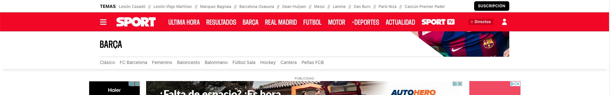

FLAGSHIP CASEFoundations → reusable components → multi-brand production → AI governance134 component families · 13 specialised AI modes
42DS — Designing at scale across a multi-brand ecosystem
I work on the shared design system of a multi-brand editorial group — token architecture, accessibility and front-end performance — while legacy products and day-to-day business keep running.
Design-token architecture from Figma to Style Dictionary, WCAG 2.1 AA in complex editorial products, and CSS performance work across the group's titles.